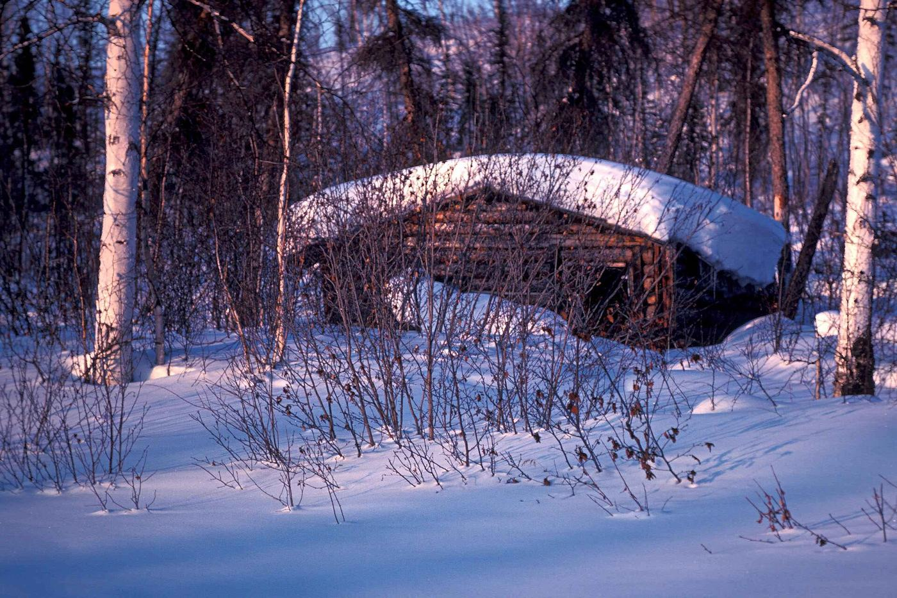
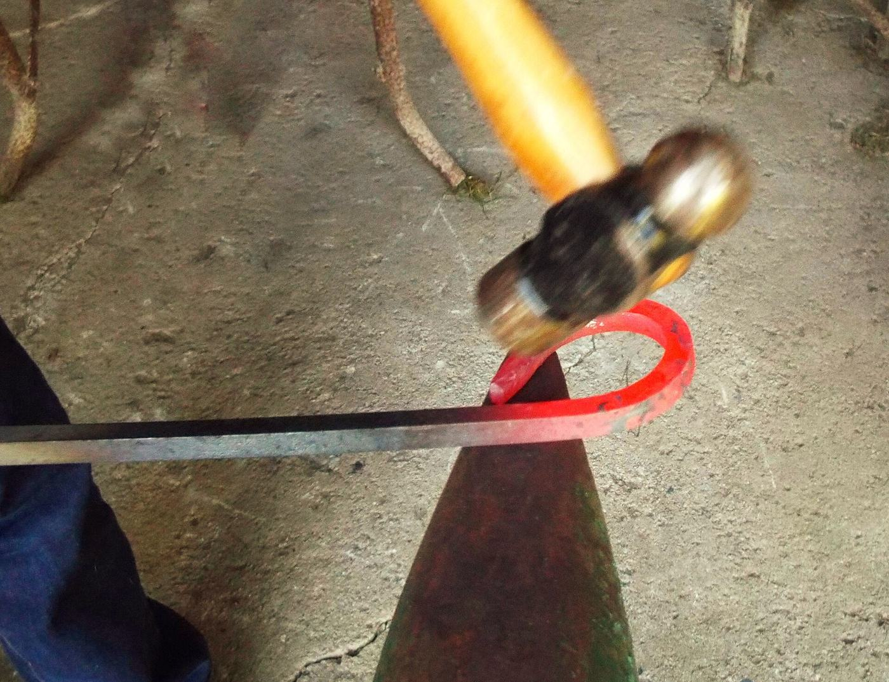
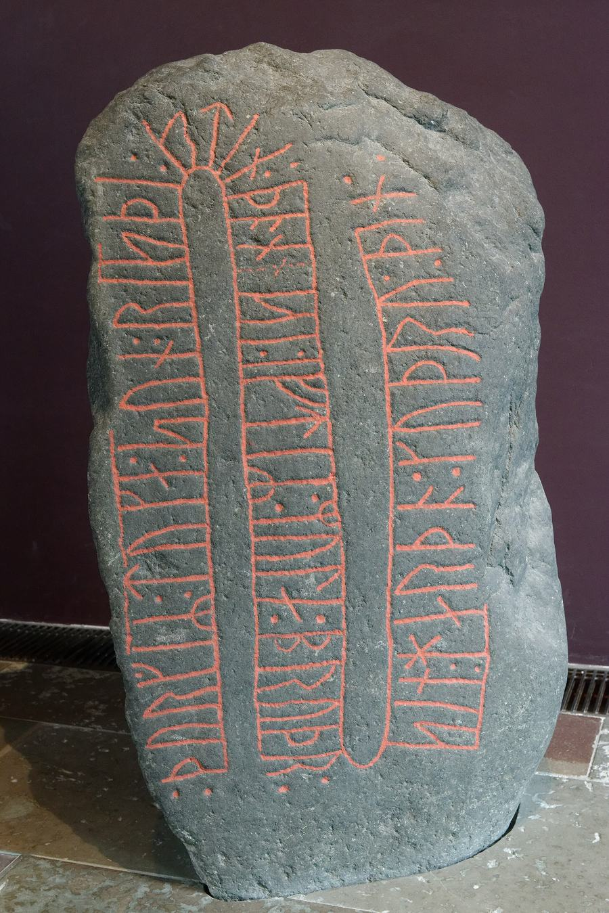
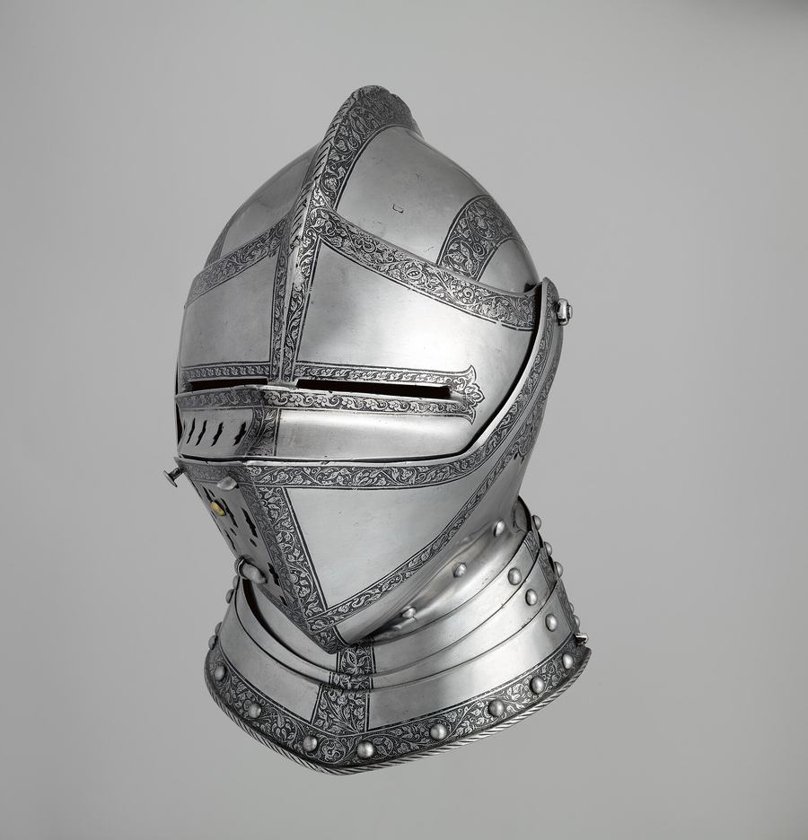
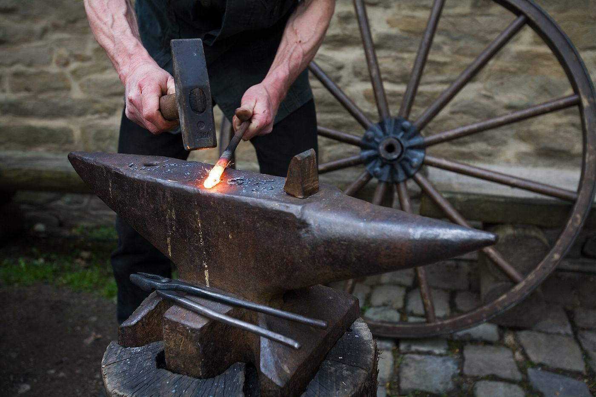
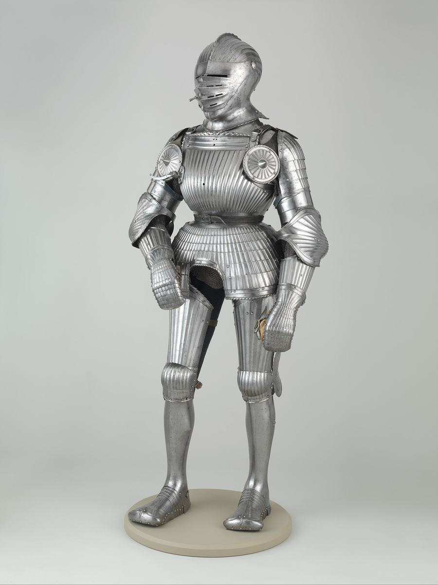

| Genre | First-person crafting simulator with slow-dread folk horror |
|---|---|
| Platform | PC (Steam). Mouse and keyboard first, controller optional |
| Players | Single-player |
| Session | 30–60 minutes. One night, one commission |
| Price model | Premium, one-time purchase |
| Scope | Large: 10–12 months to the Ship tier, team of 2–3 |
| Closest games | The Mortuary Assistant, Dredge, Papers, Please |
A craftsman whose skill is the only thing between him and grief
You are an old blacksmith, alone in a cabin deep in a dark forest. Your hands still remember the craft. At dusk a tall stranger knocks, hands you an order marked with runes, and leaves. If every piece is perfect, he says, you will see your family again.

Around the cabin, things happen that have no explanation. Dark shapes stand between the trees. Sounds come from the wrong side of the wall. Sometimes something looks in through the window. You keep working, because the metal is hot and the promise is the only thing you have left.
Like The Mortuary Assistant, but the procedure is real blacksmithing, and the metal keeps cooling while the horror pulls your eyes away. Your mistakes don't fail the night. They let something in.

The metal won't wait
Heat colour is a real-time clock. A knock at the door costs you a heat. You choose between the metal and the dark, every time.

Perfection is paid in blood
The stranger's runes are forbidden blood magic. Inscribing them means cutting your own hand. The cost carries forward, and every rune deepens the curse on the cabin.

The armor you make is alive
Piece by piece you forge a full suit. As it nears completion it turns its head toward you, stands where you didn't leave it, and sometimes is gone.
Real smithing, step by step
Steel weapons were never poured into a mould. Metal is melted into an ingot, and the shape comes from hammering at the right heat. Each step below is a physical mouse gesture, and each one can be done well or badly. That is the rule from Pillar 1: a step without a decision or a risk gets compressed.

- Melt and pour the ingotPump the bellows, read the glow, pour the crucible into the ingot mould without spilling.~1500 °C
- Heat to forging colourPull the bar from the coals when it reads orange to yellow. Too cold cracks; too hot burns the steel.900–1100 °C
- Hammer the shapeTimed, aimed swings. Draw out the length, set the bevels, form the tip. Every strike visibly moves the metal.until cherry
- NormalizeHeat and let it cool in air to relieve stress. Compressed to one gesture and a wait.~800 °C
- Harden: the magnet testHeat until a magnet no longer sticks. That is the moment to quench.~770 °C
- QuenchPlunge it in water (fast, risks a crack) or oil (safer). A critical window: the horror is allowed to interrupt here.water / oil
- TemperReheat gently and watch the oxide colours creep along the blade. Stop at the right band.200–300 °C
- Grind and sharpenThe grindstone. Even pressure, the right angle.cold
- AssembleGuard, grip and pommel; rivets for armor plates.cold
- Inscribe the runesCut your hand. Follow the stranger's sketch with the chisel and the blood. The house hears it.blood
Armor swaps the middle steps for raising: dishing a flat plate over a stake into a curved helm or breastplate, then riveting the pieces together.
Colour is the only clock
The smith has no thermometer. He reads the metal. These are the real colours a blacksmith uses, and the game's heat shader follows them. Heat also grows brighter as it climbs, so players with colour blindness can read it by brightness. Sound gives a second cue.
Temperatures are approximate for plain carbon steel. Harder edges stop at straw; springy blades and armor go toward blue. The position of the colour band along the blade is the second cue for colour-blind players.
The metal or the dark
The real core loop is a dilemma. While a piece is in a critical window, something happens. Look away and the metal cools. Keep working and the thing you ignored gets worse. Ignoring the horror costs as much as ignoring the metal.
Fairness rule: events only fire inside named critical windows (pour, quench, temper). Ordinary lost heat is recovered by reheating, at the cost of time.
From one hammer strike to eight nights
One heat · 30 seconds
Pull the bar at the right colour, strike with timed swings, watch it deform and ring. As it dulls, keep striking and risk a crack, or return it to the fire.
One stage · 5–15 minutes
Draw out a blade, raise a helm plate, harden and quench. Water or oil, one more heat, answer the scratch at the window or keep working.
One night · 30–60 minutes
The stranger arrives at dusk with the order and its rune sketch. Forge, bleed, inscribe, deliver. Better work brings back a clearer memory of the family.
The commission · 8 nights
Weapons first, to learn the craft. Then one suit of armor, piece by piece, that grows more alive as it nears completion. Two endings.
Eight nights
The story is written to an 8-night spine. Middle nights are modular, so a late cut still leaves a whole story. The order of pieces below is a working draft; the narrative comes later.
The bar under the nights shows the curse deepening with every rune inscribed.
Four rules every decision obeys
Reviewed by the creative director and revised before locking.
The Hands Remember
Every step is a physical gesture grounded in real smithing, and every gesture must carry a decision or a risk.
Test: simulate this step, compress it, or cut it? Simulate it only if the player can do it well or badly.
Dread, Not Fright
Fear comes from wrongness in familiar things. Whatever appears is seen, but never close, never confronting, never explained.
Test: when something is seen, does it hold still at a distance or move toward the player? It holds still.
The Metal Won't Wait
The forge never pauses for the horror, and the horror never waits for the forge. Ignoring the horror costs as much as ignoring the metal.
Test: freeze the heat during an event, or let it cool? Let it cool.
Perfection Is the Price
Precision is rewarded with memories of the family, and the reward should feel suspect. Perfection is paid for in blood and in the curse.
Test: does the game say a piece was perfect? Never directly. Does a flawed piece end the run? No; the house shows the cost.
What this game is not
- No combat. Fighting what's outside would turn dread into action.
- No jump-scares or screamers. No sudden loud sounds; horror sounds come from things in the room.
- No click-to-craft menus. The hands do the work.
- No open world. The forest is seen through the window, never roamed.
- No cosmic gods, no full explanation. Naming the thing kills the dread.
- No game-over screen. The night always ends, and the cost carries forward.
- No shop or trading economy. Tools change through the story.
Everything is real, until it isn't
A grounded, naturalistic cabin full of domestic clutter, lit evenly enough to be searched. The horror is a continuity error: you can never point to the moment something changed. Compare the two nights below.

Night II, then Night V
The same wall, three nights apart. Nothing jumps out. You notice later, and you are not sure.
- The cup has moved along the shelf.
- A third, identical hammer hangs on the rack.
- The wife's coat is gone from its peg.
- The helm on its stand has turned to face the room.
- The interior light has drifted slightly colder.
The room is evidence
Changes should make players doubt their own memory before they doubt the house. Test: dramatic or doubtful? Doubtful.
Wrongness is regularity
The hand-made world is crooked and organic. Wrongness arrives as too-straight lines, mirror symmetry and repeated identical objects. Test: grotesque or too perfect? Too perfect.
Only the metal burns
Hot metal is the most saturated thing on screen. Lamps and fire are pushed toward dull amber so they never read as heat. Blood is the only other strong red, used sparingly.
The stranger only ever appears as a silhouette, a hand, a shadow in the doorway or a shape in the frosted window. Memories of the family look slightly too warm and too clean, as if they were forged too.
Players who want dread, not noise
Primary: story and discovery players who come for the mystery and enjoy searching a room for what changed. Secondary: achievers and crafting fans who want the perfect piece and love real procedure.
Not for: action-horror fans who want chases and monsters, survival players looking for an economy and base-building, or streamers looking for jump-scare clips.
| Reference | What we take | What we change |
|---|---|---|
| The Mortuary Assistant | A careful job as the vehicle for horror | No jump-scares; the job is real smithing with a heat clock |
| Dredge | Calm routine broken by wrongness | A physical, graded craft in a single room |
| Papers, Please | Precision as moral pressure; rewards that implicate you | The pressure is physical and real-time |
| Inscryption | A cabin, a stranger, rewards that are traps | Dread instead of a puzzle box |
| The Witch (film) | Folk-horror restraint, a family's grief, the forest as a presence | Told through work, not dialogue |
What ships, and when
Producer verdict: OPTIMISTIC. The adjustments are applied here. Ship is the 10–12 month target; the full vision is a stretch goal or post-launch.
3 nights, one seax knife through the full chain, 6–8 horror events, one room with 8 changing props. Go or no-go at month 5.
5 nights, 2 weapons and the helm, about 15 props, 1 ending. The armor begins to move.
8 nights, 2–3 weapons and a 4-piece living suit of armor, about 22 props, blood toll, save and resume, 2 endings.
12 nights, mail, more weapons, 30 props, a third ending.
What could go wrong
Technical director verdict: CONCERNS. Feasible in Unity for 2–3 people; two risks can blow the schedule if treated as open-ended research.
Technical
- Hammer deformation that looks right. Plan: a bar shaped by parameters each strike nudges, plus hammer-mark decals. 3–4 week spike.
- Plate raising for armor is new technology. Spike it in the first 6 weeks.
- Camera exposure and bloom can distort heat colour. Lock exposure while reading heat.
- "Unobserved" leaks through shadows and reflections. The game must also track what the player actually saw.
- Around 8 different gesture systems for one knife. Build one shared framework early.
- Render pipeline (URP or HDRP) decided by a one-week lighting test once Unity's version is set.
Design and market
- Forging could get repetitive. Each night adds a technique, and armor adds new processes.
- Interruptions could feel unfair. Events only fire in critical windows.
- Players might learn to ignore events. Ignoring them must cost something.
- Repeated mouse gestures can strain hands. Timing assists from the start.
- "Like The Mortuary Assistant" promises jump-scares. Store copy will say "procedural dread".
- Smithing fans may not want horror, and horror fans may not want a sim.
Open questions
- Do players hesitate when an event fires mid-quench? The MVP playtest answers this.
- How should the blood toll feel: a hand tremor, blurred vision, the curse? It is a proposal, tested in the prototype.
- What does ignoring the horror cost, exactly?
- How is "perfect" graded, and how do grades map to memories and endings?
- Who is the stranger, and what is the armor for? The story comes later.
The road from here
/setup-engine: set up Unity and its reference docs/prototype: hammer feel and a mid-quench interruption, built fast and thrown away/art-bible: turn the visual identity into rules for every asset/design-review: check the concept is complete/map-systemsthen/design-system: one design document per system/create-architectureand the decisions it lists/vertical-sliceand/playtest-reportbefore production